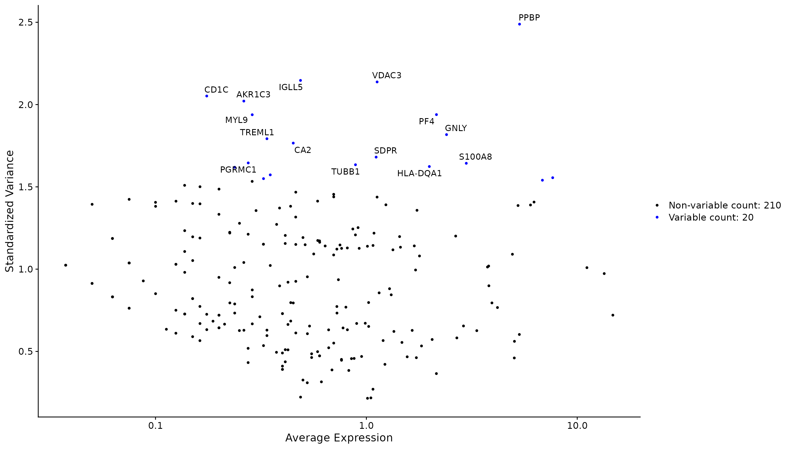
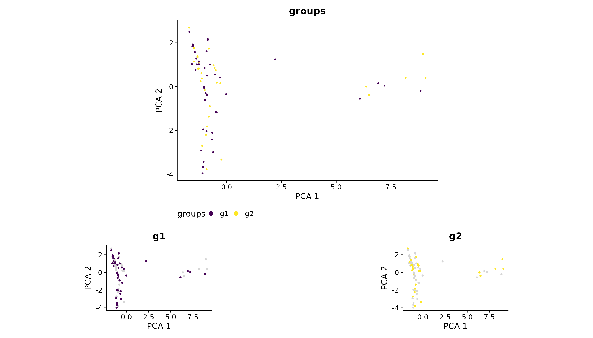
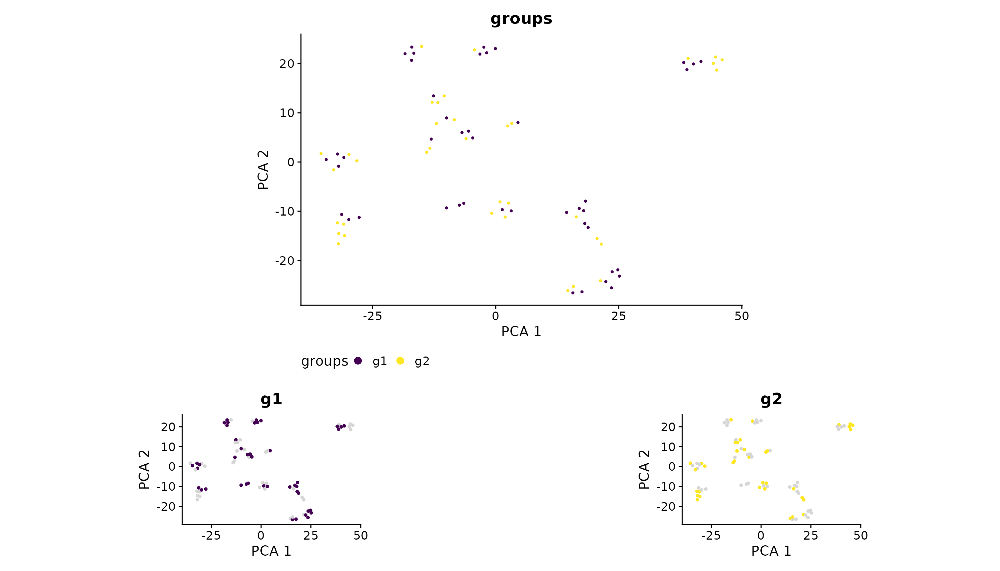

library(schelp)
#> Loading required package: Seurat
#> Loading required package: SeuratObject
#> Loading required package: sp
#> 'SeuratObject' was built under R 4.4.0 but the current version is
#> 4.4.1; it is recomended that you reinstall 'SeuratObject' as the ABI
#> for R may have changed
#>
#> Attaching package: 'SeuratObject'
#> The following objects are masked from 'package:base':
#>
#> intersect, t
pbmc_small <- NULLLoad data
We will use the pbmc_small dataset provided by
SeuratObject.
data("pbmc_small")
pbmc_small
#> An object of class Seurat
#> 230 features across 80 samples within 1 assay
#> Active assay: RNA (230 features, 20 variable features)
#> 3 layers present: counts, data, scale.data
#> 2 dimensional reductions calculated: pca, tsnePlot top variable features
One of the first step after QC is to find the variable features in
our dataset. Once done, we can visualize the top variable features using
plot_variable_features(), which is a wrapper around
Seurat::VariableFeaturePlot() function. It plots the
variable features and labels the top_n ones:
plot_variable_features(pbmc_small, top_n = 15)
Note: The
top_nargument is used to set the number of highly variable features to label, NOT how many variable feature to calculate, as calculation should be done prior to run this function (e.g. withSeurat::FindVariableFeatures()).
Calculate optimal dimensions
Usually, after PCA, another dimensionality reduction to perform is UMAP or TSNE. To decide how many PCs to use one should look at the elbow plot, or use a more quantitative approach.
Here, this approach is performed using calc_dims()
function:
pbmc_small <- calc_dims(pbmc_small, reduction = "pca")
#> The dimension that exhibits cumulative percent greater than 90% and % variation associated with the PC as less than 5 is 15
#> The first dimension that exhibits a difference with the next < 0.1 is 19
#> This values are stored in seurat_object[[pca]]@misc.Plot splitted dimplot
Another helpful method I always use in my analysis to understand
whether some meta.data column is a unwanted source of
variability is plot_splitted_dimplots(). Using any
reduction it shows how every level of the chosen meta.data column
distribute in the dimension plot:
plot_splitted_dimplots(pbmc_small, group_by = "groups",
heights = c(2, 1))
It can be applied to any reduction. I use it a lot to understand whether integration worked well:
plot_splitted_dimplots(pbmc_small, reduction = "tsne",
group_by = "groups",
heights = c(2, 1))